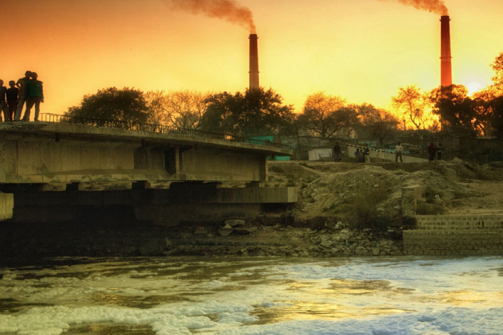
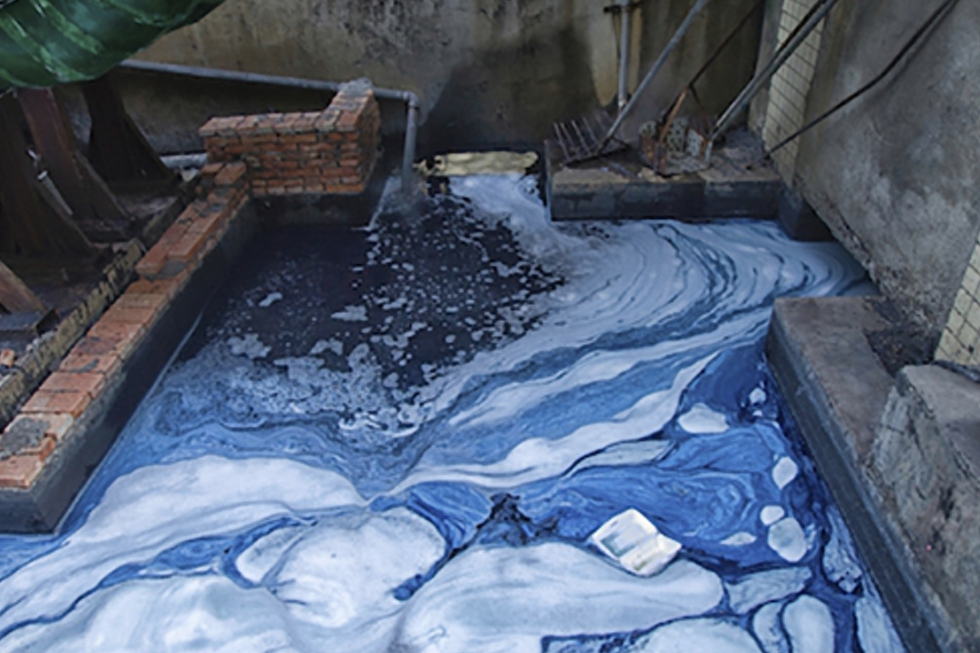
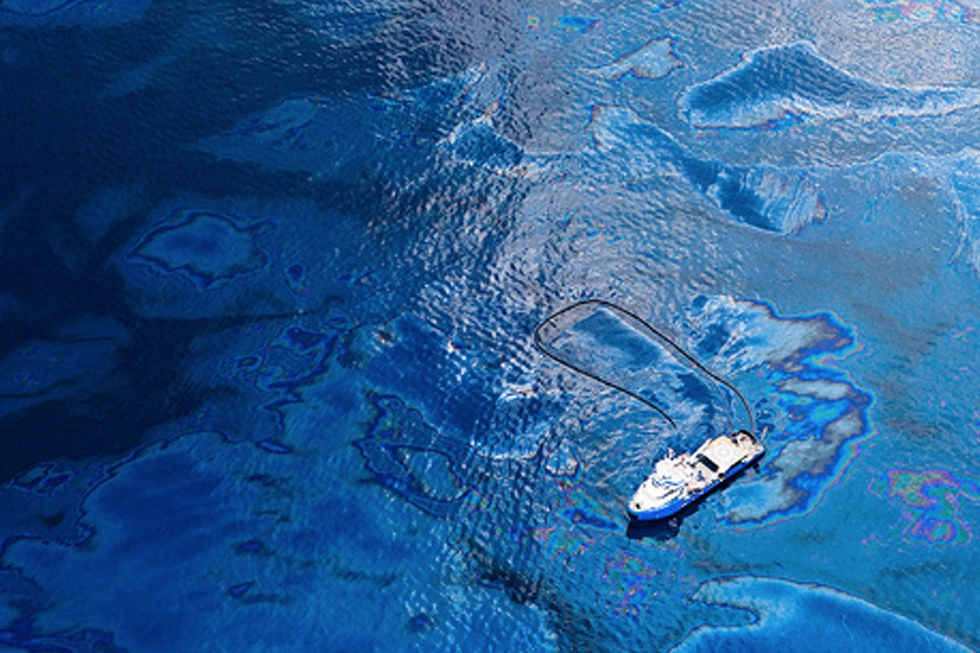
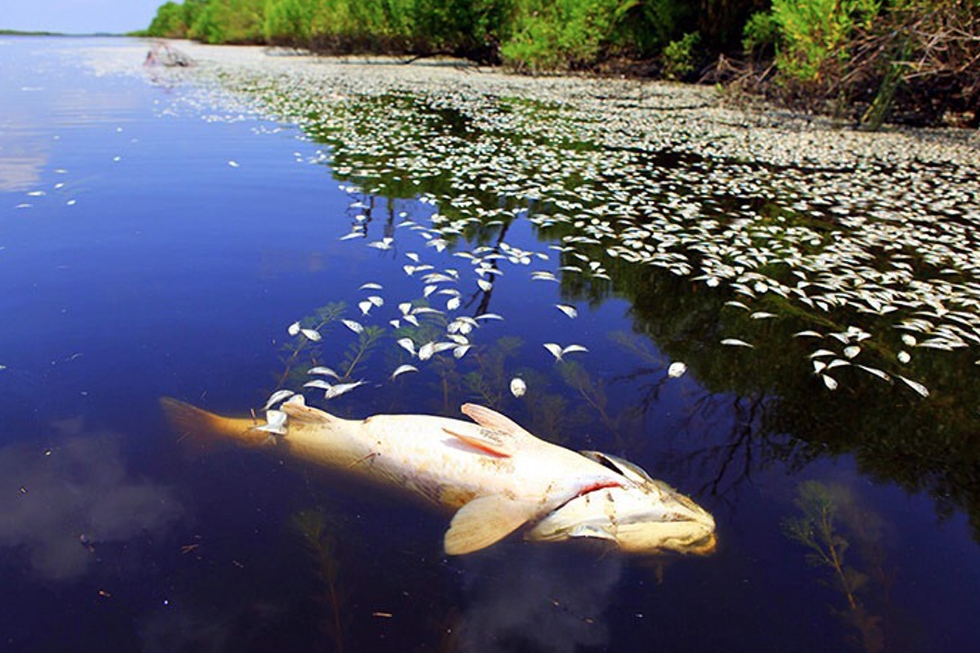
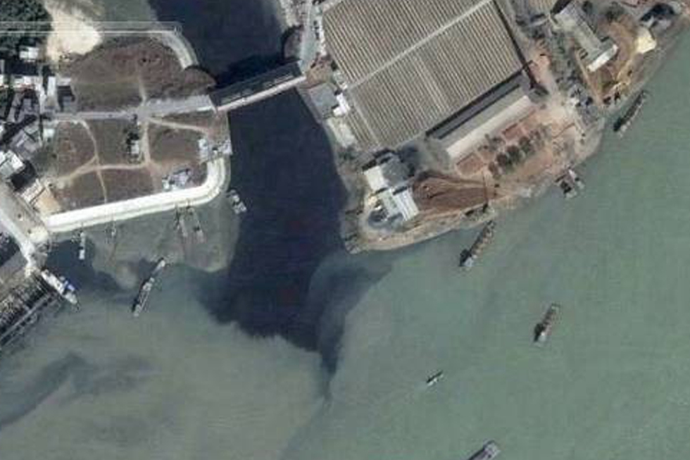
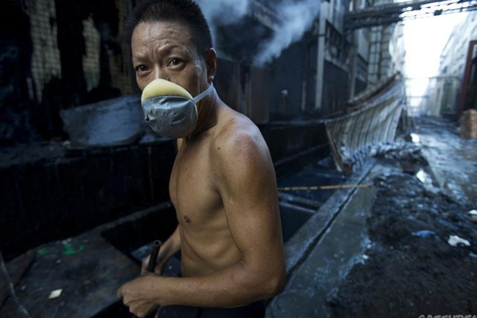
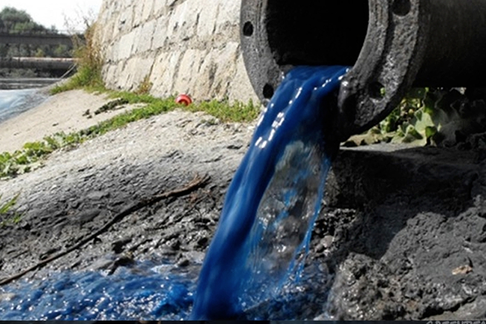

GALLERY
Click on the images to enlarge.








RiverBlue is a documentary that illustrates the damage the fashion industry does to the environment. For more details, visit RiverBlue's official website.
7,000 Liters
The amount of water needed to create one pair of jeans. This is equivalent to about 45 bathtubs of water. As a result, 2.5 billion gallons of wastewater are produced annually in Asia, contaminating 70% of Asia's rivers.
6 Million Metric Tons
The amount of carbon dioxide resulting from the production of jeans in the China annually. The production of one pair of jeans produces 20kg of carbon dioxide, and about 300 million jeans are sold in China each year.
Toxins
The denim industry pollutes rivers with heavy metals such as mercury and lead, as well as carcinogens. People who spend time near these rivers suffer from a high incidence of cancers, gastric, skin and related issues. In once case, cadmium levels in soils near polluted rivers was reported to be 128 times China's national limit. The pH of these polluted waters can reach up to 11.95.
Deception
Popular denim brands are hiding as much as 90% of the pollution they generate by outsourcing production to contractors in developing countries.
Often, the toxins are discharged untreated in rivers near drinking water sources. This has caused a spike in incidence rates of cancer and other diseases and poisonings. As a result, many people are unwilling to work at or live near denim factories. Denim factories often do not supply insurance for employees for the first three months they are employed as they realise how dangerous the working environments are.
Now we know the ramifications of this industry. But unless we are the heads of a large denim company, it feels like there is not much we can do. However, every little change makes a difference. Here are some ideas:
Click on the images to enlarge.
This survey will help the developers assess the quality of this site. Please take a few seconds to complete it! Thanks.